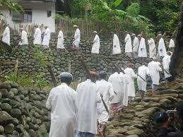

Kampung Naga
Asal Usul Kampung Naga
diinjeum tina "Detik.com" Ngaran Kampung Naga sigana kawas kawasan Pecinan sabab sato naga téh patali jeung budaya Cina. Padahal, Kampung Naga di Tasikmalaya henteu aya hubungan sareng adat Cina. Punduh atawa salah sahiji pamingpin kampung di dinya, Aki Ma'un, ngajelaskeun yén ngaran 'naga' henteu patali jeung jinis sato atawa ngaran buah. Ngaran éta asalna tina lokasi daérah anu aya di handapeun pasir atawa di lebak pasir. Tempat sapertos ieu sering disebut ku urang Sunda salaku 'dina gawir'. Kecap 'dina' nujul ka harti tempat, sedengkeun 'gawir' hartina lebak atawa jurang. Tapi urang Sunda sering ngalafalkan éta jadi 'na gawir'. Tina dinya diringkes jadi 'naga'. Lokasi Kampung Naga di Tasikmalaya, Jawa Barat, kaasup tempat wisata padésaan Sunda anu masih alami.
Sistem Organisasina
diinjeum tina "kompasiana.com" Bogaan sistem organisasi sosial formal jeung informal. Sistem organisasi formal di Kampung Naga ngawengku sistem organisasi sosial pamaréntah, kaasup kapala dusun, RT jeung RW anu dipilih sacara démokratis kawas lembur séjénna. Sedengkeun sistem organisasi informal dina masarakat Naga bisa disebut ogé kalawan lembaga adat. Adapun lembaga adat anu aya di Kampung Naga nya éta Kuncen atawa Juru Kunci, lebe adat jeung Punduh Adat.
Bangunan
Rata-rata imah adat Sunda di Kampung Naga nyaéta Jolopong. Imah Jolopong diwangun ku sababaraha ruangan, nyaéta ruang hareup disebut emper atawa tepas anu fungsina pikeun nampa tamu. Jaman baheula, ruangan ieu dikosongkeun tanpa parabot saperti meja jeung korsi, ngan ukur make tikar. Ayeuna, geus make meja jeung korsi pikeun nampa tamu. Ruangan tengah disebut tengah imah atawa patengahan, dipaké pikeun kumpul kulawarga atawa pikeun ngalaksanakeun upacara atawa selamatan anu ngondang loba jalma. Ruangan samping disebut pangkeng (kamar), jeung ruangan tukang anu diwangun ku dapur anu disebut pawon jeung tempat nyimpen beas anu disebut padaringan. diinjeum tina "Detik.com" Salah satu aturan yang berlaku di rumah Kampung Naga adalah jumlah rumah yang tidak boleh bertambah. Semuanya ada 112 bangunan termasuk masjid, balai pertemuan, dan Bumi Ageung.
Aturan Dikampung Naga
Pamali mangrupakeun kecap konci anu dipegang pageuh ku masyarakat Kampung Naga. Istilah ieu ngandung larangan pikeun ngalakukeun hal-hal anu dianggap teu hadé sareng asalna tina ajaran pamingpin ogé karuhun maranéhna. Salaku conto, pamali nyokot lauk nganggo racun, ngotorkeun cai walungan nganggo sabun, sareng nebang tangkal di leuweung. Larangan-larangan ieu teu ditulis, tapi diwariskeun ti generasi ka generasi sacara lisan ti saprak alit.
Masyarakat Kampung Naga yakin kana pamali sabab ngandung pesan moral anu kuat. Mitos sareng pamali dianggap leuwih efektif tibatan hukum anu ditulis dina ngajaga kelestarian lingkungan. Pesan moral ieu tersirat dina ungkapan "Eling, urang sanés hirup di alam. Tapi, urang hirup babarengan alam," anu diucapkeun ku kuncen Kampung Naga, Bapak Ade Suherlin. Ku cara nuturkeun pamali, masyarakat Kampung Naga parantos hasil ngajaga kelestarian lingkungan hirupna salila ratusan taun.
Upacara Adat
Upacara di kampung naga teh aya 4 antara lain:
Upacara Menyepi
Dikutip Tina "travel.indozone.id" Dilaksanakeun dina poé Salasa, Rebo, jeung Saptu. Upacara ieu penting pikeun masarakat Kampung Naga salaku bentuk kapatuhan kana aturan adat jeung ngahormat ka karuhun.
Upacara Hajat Sasih
Dilaksanakeun ku sadaya warga adat Sa-Naga, boh anu cicing di Kampung Naga boh anu di luar. Tujuanna nyaéta pikeun nyuhunkeun berkah jeung kaamanan ka karuhun sarta nganyatakeun rasa syukur ka Gusti.
Upacara Perkawinan
Dilaksanakeun saatos akad nikah jeung aya tahapan saperti upacara sawer, nincak endog (nginjak endog), buka panto, ngariung (ngumpul), ngampar (ngarémpés), sarta dipungkas ku munjungan.
Upacara Sawer
Dilaksanakeun saatos akad nikah, dimana pasangan panganten dibawa ka lokasi panyaweran. Penyawer ngucapkeun ijab kabul sareng ngalantunkeun syair sawer sambil nyebarkeun béas, iris-iris kunir, sarta koin ka arah panganten.
Agama/Kapercayaan anu dianut
Dikutip dari" digilib.uinsgd.ac.id/ "Iyeu ringkesan tina panalungtikan anu judulna "Sistem Kapercayaan Masyarakat Adat Kampung Naga: Studi Deskriptif di Desa Neglasari Kecamatan Salawu Kabupaten Tasikmalaya" ku Aan Burhan dina basa Sunda: Panalungtikan ieu ngkaji sistem kapercayaan masyarakat adat Kampung Naga anu masih keneh pageuh nyekel tradisi karuhun. Masyarakat Kampung Naga nganut agama Islam, tapi ogé ngagabungkeun ajaran agama kalayan tradisi lokal dina kahirupan sapopoe jeung upacara ritual. Panalungtikan ieu tujuanna pikeun nyaho asal-usul jeung sistem kapercayaan masyarakat adat Kampung Naga, sarta bentuk-bentuk upacara agama anu maranéhna laksanakeun. Metode anu digunakeun nyaéta deskriptif kalayan pendekatan antropologi. Hasil panalungtikan nunjukkeun yén masyarakat Kampung Naga ngalaksanakeun ibadah di masjid anu ogé digunakeun pikeun upacara adat sapertos Hajat Sasih. Maranéhna ogé percaya yén poé-poé tangtu miboga makna magis religius sarta masih nuturkeun larangan-larangan anu diwariskeun sacara turun-temurun.
Lima Fakta Unik Tentang Kampung Naga
Ngajaga Amanat Karuhun
Masyarakat Kampung Naga pohara ngjaga amanat karuhun jeung ngalaksanakeun tradisi anu diwariskeun. Sanajan mayoritas masyarakatna ngalaksanakeun agama Islam, maranéhna tetep ngalaksanakeun tradisi jeung budaya karuhun saperti upacara Hajat Sasih.
Kaitan sareng Karajaan Galunggung
Kampung Naga miboga sajarah anu menarik sareng dipercanten miboga hubungan erat sareng Pangeran Singaparna, Panglima Karajaan Timbanganten, anu jadi karuhun warga Kampung Naga.
Teu Aya Listrik
Masyarakat Kampung Naga henteu ngagunakeun listrik sanajan geus ditawarkeun. Maranéhna leuwih milih ngajaga kelestarian budaya karuhun jeung kesetaraan sosial ku ngamangpaatkeun pencahayaan tina seuneu saperti damar jeung oncor.
Lokasi di Lembah Subur
Kampung Naga ayana di lembah subur anu kaliwatan ku walungan Ciwulan. Pikeun ngahontal kampung ieu, sémah kudu nurunkeun 300-400 undakan kalayan kemiringan 45 derajat.
Ngjaga Adat Istiadat
Mayoritas penduduk Kampung Naga nyaéta penganut agama Islam, tapi maranéhna tetep ngjaga adat istiadat anu diwariskeun karuhun. Maranéhna ogé taat ngalaksanakeun upacara adat saperti Sa-Naga anu dipuseurkeun di Kampung Naga.